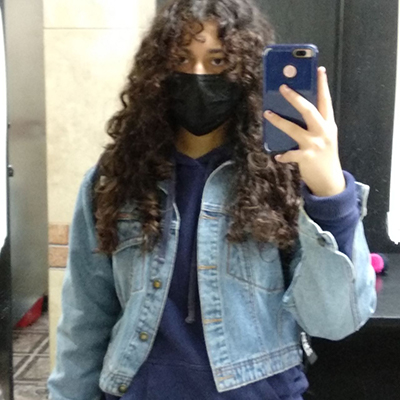
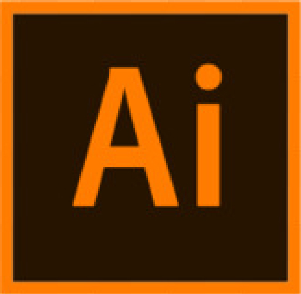
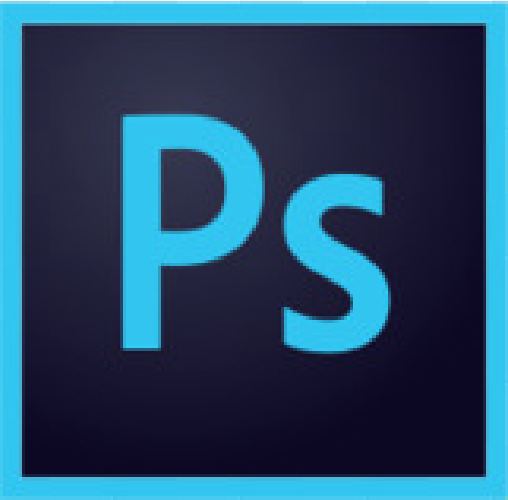

TRABAJOS:
Estos son algunos de mis trabajos favoritos duarnte la cursada del 1er cuatrimestre:
{kind=link}
{kind=link}
POSTER
Este trabajo fue realizado en Illustrator, para la materia de Representación Gráfica. Fue el trabajo N° 3
{kind=link}
MOCKUP
Este trabajo fue realizado en Illustrator, para la materia de Diseño Gráfico, y formó parte del trabajo N° 2 donde hice la representación de una identidad corporativa.
{kind=link}
SOMBRAS, PINTURA Y TEXTURAS
Este trabajo fue realizado en Photoshop, para la materia de Tratamiento Digital, y formó parte del trabajo N° 1 donde trabaje la pintura y el texturizado sobre un dibujo de líneas simples.
{kind=link}
ILUSTRACIÓN 3D
Este trabajo fue realizado en Illustrator, para la materia de Illustración Gráfica, y formó parte del trabajo N° 2 donde hice una ilustración con efecto 3D.
{kind=link}
FOTOMONTAJE
Este trabajo fue realizado en Photoshop, para la materia de Tratamiento Digital, y formó parte del trabajo N° 2 donde hice un fotomontaje.
Conoce más de las herramietas que fui aprendiendo a lo largo de mi cursada.

Adobe Illustrator
Lo utilizamos para crear ilustraciones durante el primer cuatrimestre.

Adobe Photoshop.
Lo utilizamos para retocar imagenes, y crear mundos más alla de la realidad.

Visual Studio
Lo utilizamos para darle vida a nuestras creaciones con las herramientas como Ai y Ps.
Un dato curioso sobre Taylor para destacar es que, cuando la pandemia llegó y todos nos vimos forzados al encierro (y entre eso la locura), la cantante estadounidense no se dió tiempo ni de aburrirse, todo lo contrario, supo muy bien como mantenerse ocupada. Y es que en durante plena pandemia mundial, Taylor Swift dejó a todo el mundo con la boca abierta cuando lanzo, no uno, sino dos álbumes de estudio, cada uno con su propio estilo. Así que así fue como una vez más la artista salvo a sus fans de la locura del encierro y a aquellos que no eran tan fans, pero durante un momento difícil encontraron compañia con su música. Yo misma me veo reflejada con el último caso. Ahora, ¿Queda claro por qué es mi idola?
TRACKLIST:
1. the 1
2. cardigan
3. the last great american dynasty
4. exile (feat. Bon Iver)
5. my tears ricochet
6. mirrorball
7. seven
8. august
9. this is my trying
10. illicit affairs
11. invisible string
12. mad woman
13. epiphany
14. betty
15. peace
16. hoax
17. the lakes - bonus track
FOLKLORE
Junio 2020
TRACKLIST:
1. willow
2. champagne problems
3. gold rush
4. ´tis damn season
5. tolerate it
6. no body, no crime (feat. HAIM)
7. happiness
8. dorothea
9. coney island (feat. The National)
10. ivy
11. cowboy like me
12. long story short
13. marjorie
14. closure
15. evermore (feat. Bon Iver)
16. right where you left me - bonus track
17. it´s time to go - bonus track